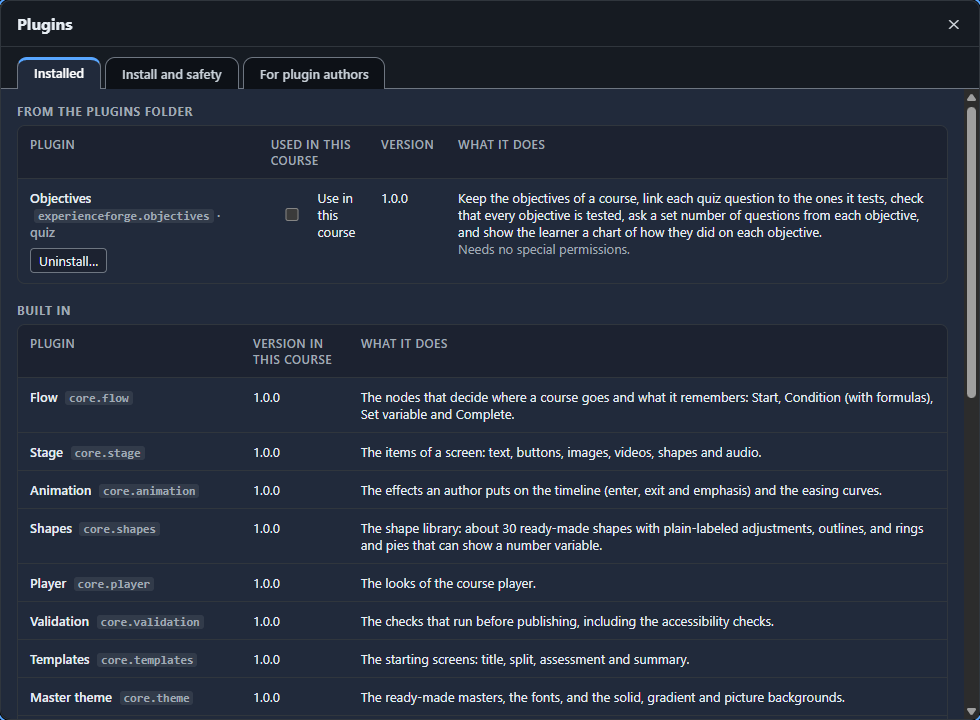
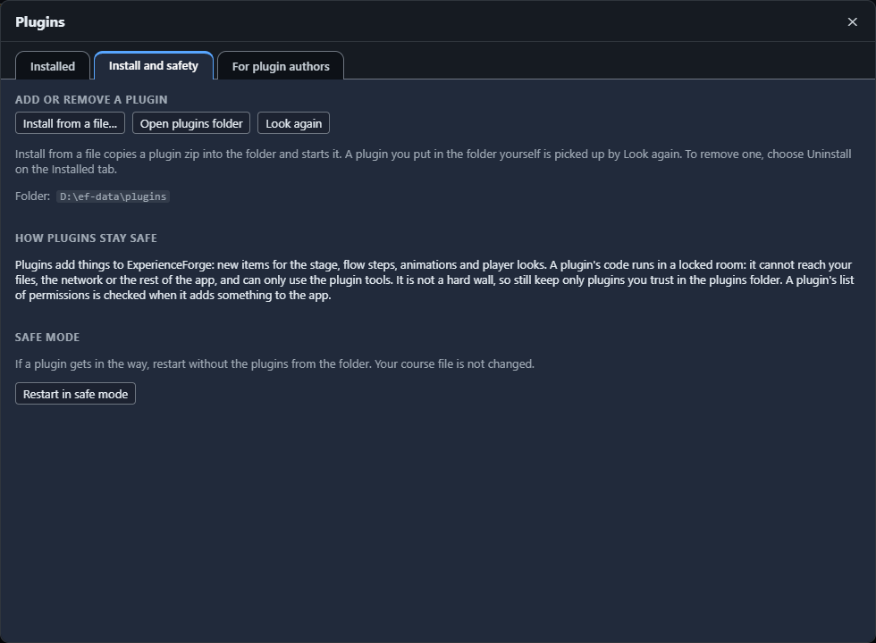
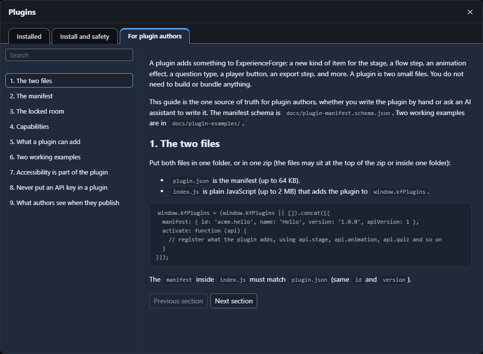
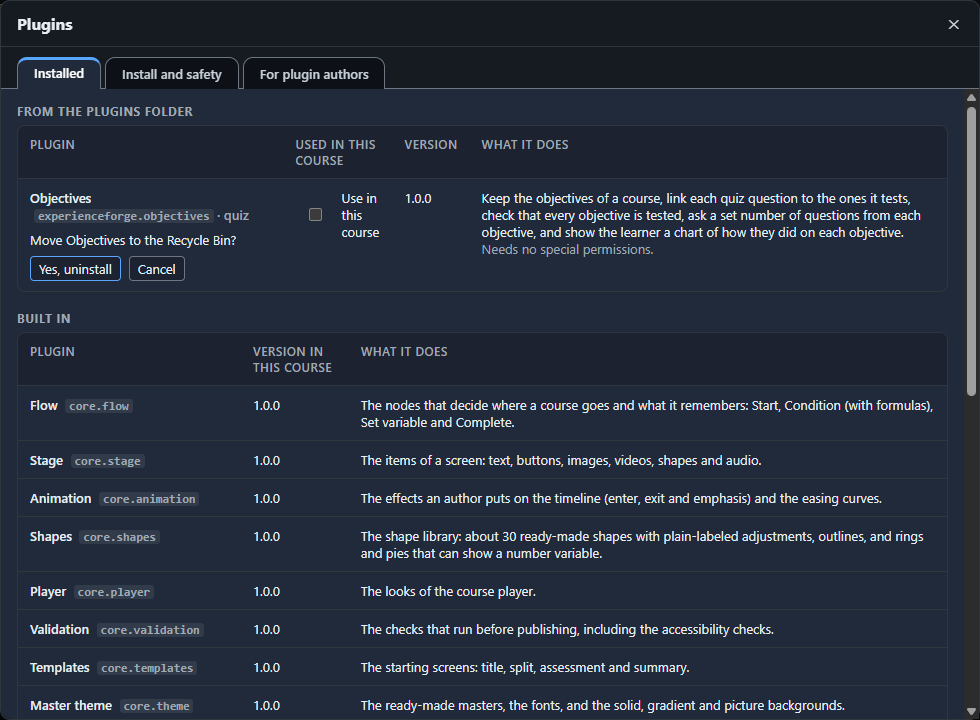
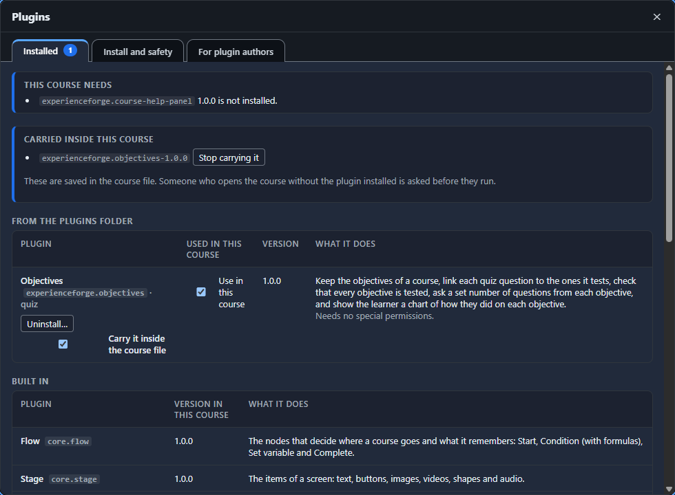
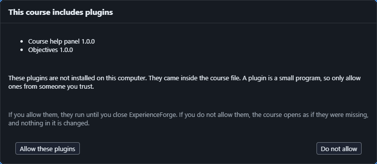

Plugins
Plugins add things to ExperienceForge: new kinds of items for the stage, new flow steps, animations, player looks. Some come with the app (see Help → Plugins…); you can add others.
Help → Plugins… has three tabs. Installed lists the plugins from your plugins folder and, below them, the ones that come with the app. A number on the tab means something needs attention, such as a plugin that did not load or one the course needs.

Install and safety has the buttons to add a plugin, open the plugins folder, look again and restart in safe mode:

For plugin authors is the guide to writing a plugin, with its sections down the side and a search box:

- Add a plugin: open the Install and safety tab. The easiest way is Install from a file…. Pick the plugin's zip; it is checked, copied into your plugins folder and started. You can also open Open plugins folder and put the plugin there yourself, as a folder or a zip (it has a
plugin.jsonand anindex.jsinside), then choose Look again. If it does not load, it is listed under Not loaded with the reason. A plugin you already installed at the same version is not installed twice. - Remove a plugin: on the Installed tab, choose Uninstall… next to a plugin from your folder, then Yes, uninstall. It is moved to the Recycle Bin, so you can put it back from there. The plugin keeps running until you restart the app (Restart now is next to it). A course that used it still opens: its settings are kept, and Help → Plugins… lists the plugin under This course needs. The plugins that come with the app cannot be removed.

- If a plugin is missing: a course that uses a plugin you do not have still opens, and nothing in it is lost. The items that need the plugin say Needs plugin… on the stage and on the Flow Canvas, their settings are kept, and Check course warns about each one (VAL-W35). Install the plugin and they come back. If the plugin's maker gave a download address, Help → Plugins… → This course needs shows an Open download page button next to the address; it opens only when you click it.
- If a built-in plugin version is missing: if a course lists a version of a built-in plugin that is not installed (for example it was made with an older version), the app asks whether to use the installed version. Use the installed version writes it into the course (one Undo step). Keep the course as it is leaves the course's list unchanged; the course still runs on the installed version.
- Carry a plugin inside a course: a course you send to someone else needs the plugins it uses. Open Help → Plugins…, find the plugin on the Installed tab, and tick Carry it inside the course file (it is offered once Use in this course is ticked). Save the course. A copy of the plugin now travels inside the
.eforgefile. Carried inside this course at the top of the Installed tab lists them, each with Stop carrying it. Only plugins you have installed can be carried, at the version the course uses.

- Open a course that carries plugins: if you already have the same version of a plugin installed, your copy is used and nothing is asked. If you do not, ExperienceForge shows This course includes plugins and names them. A plugin is a small program, so only choose Allow these plugins for a course from someone you trust. They run until you close the app and are not installed. Do not allow opens the course as if the plugins were missing: nothing in it is changed or lost.

- Use it in a course: tick Use in this course next to the plugin. A plugin the course does not list is not used. The course remembers which plugins and versions it uses.
- Choose a version: if more than one version of a plugin is installed, pick the one this course should use. The plugins that come with the app are always on; only the version can change.
- Export: a course carries the code of the plugins it uses, so they work for learners. Before you publish, Check course lists each plugin that puts its own code in the course, and warns when that code mentions a web address or a call such as
fetch, because many learning systems block calls to outside sites. - Write your own: open the For plugin authors tab. The same guide is the file
docs/plugin-authoring.md; see alsodocs/plugin-manifest.schema.jsonand the two examples indocs/plugin-examples/. Never put an API key in a plugin: anyone who opens the course can read it. - A plugin's own guide pages: a plugin can carry its how-to for this guide. Its pages show in this window, after the app's sections, under Plugin: its name, whenever the plugin is installed. The Objectives how-to is one of them.
- What a plugin can add: new items for the stage, extra fields on every question, lists kept with the course (each plugin adds its own button under Build, such as Objectives…), ways of choosing a quiz's questions, flow steps, animations and keyframe properties, player buttons, panels and looks, ways to publish (export targets) and extra steps when publishing, extra checks in Check course, screen templates, quiz page templates, ready-made masters, fonts and backgrounds, places to find images and sounds, converters for other file types, ways to turn speech into captions, caption file formats and styles, and ways to score a quiz or show its results.
- Plugins run in a locked room. A plugin's code cannot reach your files, the network, the course window or the rest of the app. It can only use the plugin tools and make its own on-screen items. It is not a hard wall, so still keep only plugins you trust in the folder. A plugin written loosely (for example one that sets a variable without declaring it) may fail to start; Help → Plugins… says why.
- Permissions. A plugin lists what it needs, such as contacting the internet, reading files, or putting its own code in your published courses. Help → Plugins… shows these in plain words next to each plugin, and marks the sensitive ones. Read them before you tick Use in this course. The app refuses a plugin that does something it did not list.
- If a plugin causes trouble, use safe mode. Choose Help → Restart in safe mode (or the same button in Help → Plugins…). The app starts again with only the plugins that come with it, each at its newest version, and it does not look in the plugins folder. Your course file is not changed, so you can open it, fix or remove the plugin, and choose Help → Restart normally. In safe mode the plugin choices are switched off, and a course that uses plugins from the folder cannot be exported until you restart normally. If the app will not open at all, start it with
--safe-modeadded to the shortcut's Target.